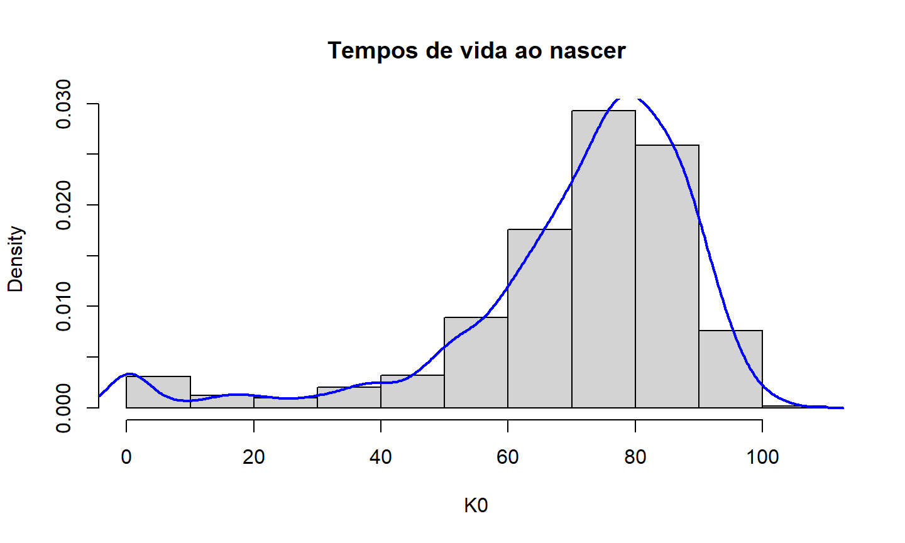
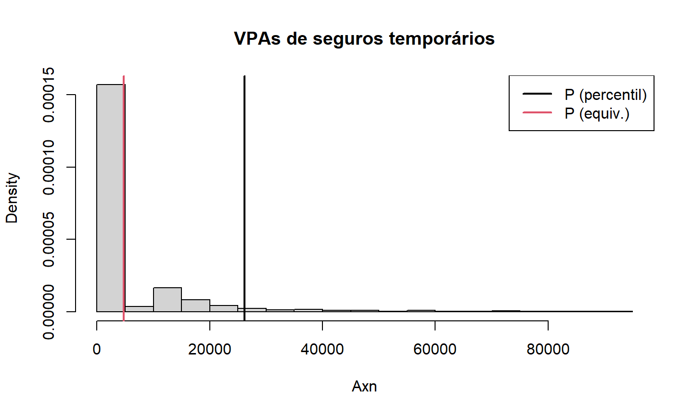
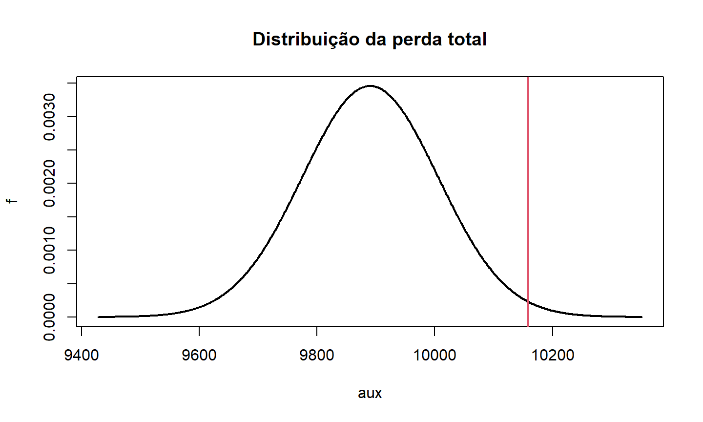

Múltiplas Vidas
- seguros e anuidades
- anuidades reversíveis
Despesas
Simulação de tempos de vida
- simulação de VPAs
- aplicação: princípio do percentil
08 de julho de 2022
Aula de Hoje
Múltiplas Vidas
Seguros para Múltiplas Vidas
A teoria geral que vimos até agora para seguros, anuidades, prêmios e reservas pode ser extendida para considerar apólices para múltiplas vidas.
A principal relação para essas quantidades envolve as v.a.’s do tempo de vida futuro dos status de vida conjunta e último sobrevivente:
\[T_{xy} + T_{\overline{xy}} = T_x + T_y \]
- Essa relação também se aplica a Valores Presentes Atuariais.
Exemplo 1
Considere duas vidas independentes com idades 60 e 70.
Assumindo que as duas vidas seguem a distribuição de sobrevivência da tabela do SOA, encontre o VPA de um seguro vitalício que paga uma unidade monetária no final do ano da última morte.
Exemplo
tab.xy = list(soa08Act,soa08Act) ## cálculo direto Axyzn(tab.xy, x=c(60,70), status="last")
## [1] 0.3117959
## cálculo indireto Axn(soa08Act,60) + Axn(soa08Act,70) - Axyzn(tab.xy,x=c(60,70))
## [1] 0.3117959
Exemplo 2
E se a indenização do seguro for paga no final do ano da primeira morte? O VPA será maior ou menor?
Verifique se a igualdade \(A_{xy} + A_{\overline{xy}} = A_x + A_y\) é verdadeira.
Anuidades Reversíveis
A teoria de múltiplas vidas é utilizada para avaliar anuidades reversíveis, um tipo especial de anuidades para duas vidas.
Uma anuidade reversível paga os benefícios após uma das vidas falhar, e depois enquanto a outra estiver viva.
Por exemplo, o VPA de uma anuidade que paga $1 vitaliciamente para \((y)\) após a morte de \((x)\) é dada por:
\[\ddot{a}_{x|y} = \ddot{a}_y - \ddot{a}_{xy}\]
Exemplo 3
- Calcule o VPA de uma anuidade reversível vitalícia para um segurado de 60 anos, que começa a ser paga após a morte de um indivíduo de 70 anos.
axn(soa08Act,60) - axyzn(tab.xy,c(60,70))
## [1] 3.589022
Despesas
Despesas
Vamos ver agora como incorporar as despesas nos cálculos dos VPA’s, prêmios e reservas.
Na prática, tratamos as despesas como se fossem “benefícios”.
Para encontrar o prêmio bruto, o VPA das despesas é adicionado ao VPA dos benefícios, e então igualado ao VPA dos prêmios.
Similarmente, as reservas são obtidas como a diferença entre o VPA dos benefícios e despesas futuros e o VPA dos prêmios futuros.
Exercício 1
Para um seguro de vida inteira discreto com soma segurada de $100.000 para uma vida de 35 anos, considere:
despesa de 10% dos prêmios por ano;
despesa de $25 por apólice por ano;
despesa de manutenção anual de $2,50 por cada $1.000 de soma segurada;
todas as despesas são pagas no começo do ano.
Encontre o prêmio bruto \(G\).
\[ G. \ddot{a}_{35} = 100.000 \times A_{35} + \left( 0,1.G + 25 + 2,5 . \frac{100.000}{1.000} \right) \times \ddot{a}_{35}\]
Exercício 2
Para um seguro de vida inteira de $1.000 para um segurado de 45 anos, considere:
despesa de 10% do prêmio bruto por ano;
despesas adicionais de $3 por ano;
todas as despesas são pagas no começo do ano.
Calcule:
- o prêmio puro anual;
- o prêmio bruto anual;
- a reserva líquida no final do primeiro ano;
- a reserva bruta no final do primeiro ano.
Simulação de tempos de vida
Simulação de tempos de vida
O valor presente de contratos de seguro e anuidades (life-contingencies) são variáveis aleatórias.
São variáveis aleatórias que dependem do tempo de vida futuro de \((x)\).
Podemos usar amostras de \(T(x)\) e \(K(x)\) para avaliar funções mais complexas dessas variáveis através de Métodos de Monte Carlo.
Simulação de tempos de vida
- Vamos gerar uma amostra de \(n=1000\) tempos de vida para indivíduos nascendo hoje, e que terão distribuição de mortalidade de acordo com a tabela SOA.
## Simulação - amostra de tempos de vida ao nascer K(0) set.seed(123) K0 = rLife(n=1000, object=soa08Act, x=0, type="Kx")
Simulação de tempos de vida
- Como está distribuída essa variável aleatória?

Simulação de tempos de vida
- Como está distribuída essa variável aleatória?
## estatísticas descritivas summary(K0)
## média empírica mean(K0) ## média teórica exn(soa08Act) ## são iguais? t.test(x=K0, mu=exn(soa08Act))
Exercício 3
Gere uma nova amostra de K0 alterando a semente. Repita os resultados do slide anterior. O que mudou?
E se aumentar o tamanho da amostra?
E se selecionarmos
type="Tx"?
Simulação de tempos de vida
Gerar uma amostra de tempos de vida pode ser usado para computar quantias que dependem de \(T(x)\) e \(K(x)\).
Por exemplo, se quisermos calcular a esperança e variância do valor presente de um seguro de vida inteira.
Exercício 4
Gere uma amostra de \(n=10.000\) tempos de vida ao nascer de acordo com a tabela do SOA. Fixe a semente como
2022.Com i=6%, calcule o valor presente do pagamento de uma indenização de $1.000 no final do ano de morte para cada indivíduo dessa amostra. Armazene esses valores em um vetor
VP.Encontre a média e a variância de
VP.
## [1] 47.07831
## [1] 21817.11
Exemplo
Esses valores dependem da amostra que geramos.
E se repetirmos essa simulação 100 vezes?
A cada repetição, fazer:
Gerar uma amostra de tamanho 10.000 de tempos de vida ao nascer.
Para cada indivíduo da amostra, calcular o valor presente de um seguro de vida inteira.
Obter a média dos valores presentes de cada amostra.
Plotar a média do valor presente em um gráfico de frequência.
Exemplo

Exemplo
- Compare esses valores que você obteve com os valores de VPA e variância calculados pelas funções do pacote
lifecontingencies.
## média teórica ( A = 1000*Axn(soa08Act, 0, i=0.06) )
## [1] 49.00258
## variância teórica ( 1000^2*Axn(soa08Act, 0, i=0.06, power=2) - A^2 )
## [1] 23519.76
Princípio do Percentil
A simulação de uma amostra de tempos de vida ao nascer também pode ser útil para determinar o prêmio de acordo com o Princípio do Percentil.
O prêmio é determinado como sendo o valor mínimo que faz com que a probabilidade da seguradora ter uma perda total negativa seja \(\alpha\).
\[L_{0,i} = VP(\mbox{benef. futuros})_{0,i} - VP(\mbox{prêmios futuros})_{0,i} \] \[L = \sum_{i=1}^N L_{0,i} \] \[P(L < 0) = \alpha\]
Princípio do Percentil
Se o tamanho da carteira for suficientemente grande, podemos usar o Teorema Central do Limite para encontrar o prêmio de acordo com o Princípio do Percentil.
Com \(N\) grande, \(L\) tem distribuição aproximadamente normal, com média \(E(L)=N.\,E(L_{0,i})\) e variância \(Var(L) = N.\,Var(L_{0,i})\).
\[P(L<0) = P\left( \frac{L-E(L)}{\sqrt{Var(L)}} < \frac{-E(L)}{\sqrt{Var(L)}} \right) = \Phi\left(\frac{-E(L)}{\sqrt{Var(L)}}\right) = \boldsymbol\alpha \]
- Assim, usamos a equação acima para encontrar o prêmio que satisfaz essa condição, já que \(E(L)\) e \(Var(L)\) dependem de \(P\).
Princípio do Percentil
- Também podemos usar a nossa amostra de tempos de vida simulados, e obter o prêmio que satisfaz o princípio do percentil usando Métodos de Monte Carlo.
Exemplo
Um segurado de idade 25 contrata um seguro temporário por 40 anos de $100.000.
Encontre o menor prêmio que a seguradora pode cobrar para garantir que a probabilidade de perda positiva (prejuízo) não seja maior do que 5%.
Exemplo
## Exemplo - cálculo do prêmio de acordo com o princípio do percentil
## primeiro, vamos gerar amostras de VPA's de seguros temporários
set.seed(171)
samples = 100000*rLifeContingencies(n=10000, lifecontingency="Axn", object=soa08Act,
x=25, t=40, parallel=TRUE)
## distribuição da amostra
head(samples)
hist(samples)
summary(samples) ## probabilidade de VPA positivo mean(samples>0) qxt(soa08Act,25,40)
Exemplo
## Calculando o prêmio (único) ## de acordo com o princípio do percentil (P.perc = quantile(samples, p=0.95))
## 95% ## 26179.73
## de acordo com o princípio da equivalência (P.equi = mean(samples)) # empírico
## [1] 4777.045
(P.teo = 100000*Axn(soa08Act, 25, 40)) # teórico
## [1] 4797.088
Exemplo

Exemplo
## probabilidade de perda positiva mean(samples>P.perc)
## [1] 0.0469
mean(samples>P.equi)
## [1] 0.2143
Exemplo
Uma seguradora vai subscrever a cobertura de pagamentos de aposentadorias vitalícias para uma carteira de 1000 aposentados, todos de 65 anos.
Calcule o valor a ser cobrado de cada aposentado para que a probabilidade da seguradora ter uma perda positiva (prejuízo) seja de no máximo 1%.
Exemplo
## Exemplo - carteira de aposentados
## primeiro, gerar amostra de VPAs de anuidades
set.seed(1605)
ax65 = rLifeContingencies(100000, lifecontingency="axn", object=soa08Act,
x=65, parallel=TRUE)
## distribuição da amostra
head(ax65)
hist(ax65)
summary(ax65)
Exemplo
- Se \(Z\) é a v.a. que representa o VP dessa anuidade, o VP da perda total da carteira com 1000 segurados tem distribuição normal com média e desvio padrão dados por:
\[\mu = 1000.\,E(Z) \qquad\qquad \sigma = \sqrt{1000.\,Var(Z)} \]
## média e desvio padrão dos VPAs muax65 = mean(ax65) sdax65 = sd(ax65) ## prêmio (P = qnorm(p=0.99, mean=1000*muax65, sd=sqrt(1000)*sdax65)/1000)
## [1] 10.15841
Exemplo

Simulação de VPAs
- O pacote
lifecontingenciestambém encontra o VPA de momentos de ordem maior do que um, com a opçãopower.
Exemplo:
- Vamos calcular a variância de um seguro crescente temporário por 20 anos para um segurado de 45 anos.
Exemplo
## Exemplo - variância de seguro crescente
## gerar amostra de VPAs
set.seed(0910)
sampleIAxn = rLifeContingencies(50000, lifecontingency="IAxn", object=soa08Act,
x=45, t=20, parallel=TRUE)
## variância amostral
var(sampleIAxn)
## [1] 4.726047
## variância teórica IAxn(soa08Act, 45, 20, power=2) - (IAxn(soa08Act, 45, 20))^2
## [1] 4.719924